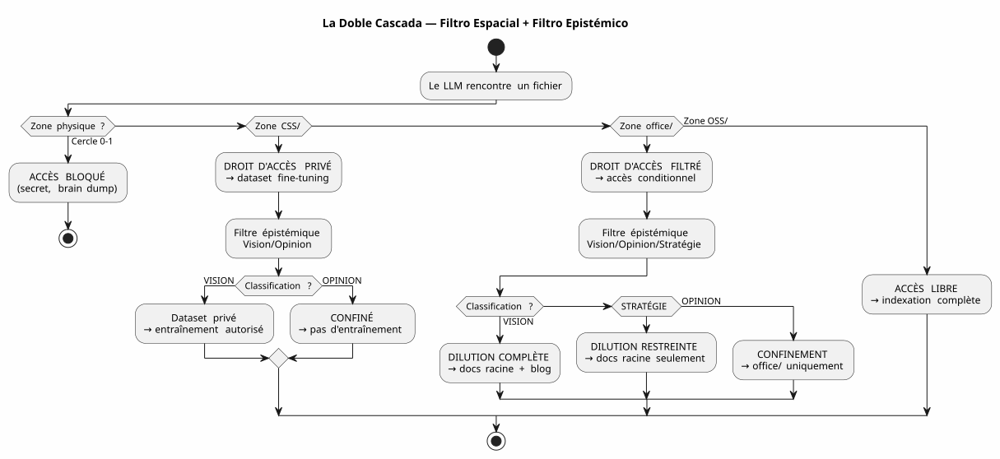
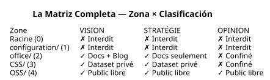

La Matriz de Gobernanza LLM — ¿Por qué la Seguridad de su IA comienza por la arborescencia?
Publié le 04 May 2026
- El Problema : el Prompt Engineering es un Castillo de Arena
- Mi Respuesta : La matriz 4×4
- Cómo el LLM consume esta matriz
- Implementación: Tareas Gradle Tipadas
- ¿Por qué es un Manifiesto, no solo una Spec?
- La Cascada Completa — del Brain Dump al Artículo del Blog
- A favor/En contra
- Conclusión: Ordena tus archivos, no tus prompts
- Referencias
Durante meses, he apilado las reglas de gobierno de los agentes. Archivos EAGER, listas de verificación LAZY, protocolos de fin de sesión en seis pasos. Y sin embargo, una pregunta permanecía pendiente: cómo el LLM sabe qué es tiene derecho de hacer con un archivo ?
La respuesta no está en un prompt. Está en el sistema de archivos.
Esta es la especificación de arquitectura que hace que la respuesta sea explotable — la matriz de gobierno LLM.
El Problema : el Prompt Engineering es un Castillo de Arena
Cuando se le da un archivo a un LLM, se le da todo. El contenido, sí — pero también la falta de salvaguardas. El LLM no sabe si este archivo contiene un secreto, una opinión especulativa, o código closed source. Lo va a indexar. resumirlo, citándolo, mezclándolo con otros datos — y potencialmente publicarlo en una incrustación pública o una respuesta de usuario.
El desfile clásico, es el prompt :
"Tu es un assistant sécurisé. Ne divulgue jamais d'informations confidentielles.
Si tu détectes un secret, ignore-le. Si tu détectes une opinion, ne la répète pas."Este prompt tiene tres problemas:
-
Se basa en la buena voluntad del LLM. Un modelo lo suficientemente grande para
Resolver bugs complejos es suficientemente grande para evitar una instrucción de seguridad perdida en 200k tokens de contexto
-
Es contextual, no estructural. Cambia de prompt, cambia de LLM
cambia de sesión — y la regla desaparece
-
No escala. Cada nuevo tipo de archivo, cada nuevo nivel
de confidencialidad exige una nueva cláusula. Su indicación se convierte en un texto regulatorio que nadie lee por completo.
|
La seguridad de un sistema nunca debe depender de una instrucción que Puede olvidar, evitar o no cargar. Debe depender de una barrera que no se puede cruzar sin quererlo explícitamente. |
Mi Respuesta : La matriz 4×4
La solución que he implementado en mi workspace es una matriz zona × derecho de acceso LLM. Ella no le pide al LLM que sea prudente. Ella devuelve la imprudencia estructuralmente imposible.
Failed to generate image: PlantUML preprocessing failed: [From <input> (line 10) ]
@startuml
skinparam backgroundColor #FEFEFE
skinparam defaultTextAlignment center
skinparam wrapWidth 220
title Matriz de Gobernanza LLM — Zona × Derecho de Acceso
package "Espacio de trabajo" {
rectangle "RAÍZ
(Círculo 0)
^^^^^
Syntax Error? (Assumed diagram type: activity)
@startuml
skinparam backgroundColor #FEFEFE
skinparam defaultTextAlignment center
skinparam wrapWidth 220
title Matriz de Gobernanza LLM — Zona × Derecho de Acceso
package "Espacio de trabajo" {
rectangle "RAÍZ
(Círculo 0)
━━━━━━
Brain dump
Pensamiento libre
[PROHIBIDO LLM]" as Z0 #FFB3B3
rectangle "configuration/
(Círculo 1)
━━━━━━
Secrets, tokens
Infra privada
[PROHIBIDO LLM]" as Z1 #FFB3B3
rectangle "office/
(Círculo 2)
━━━━━━
Datos editoriales
Artículos, encuadres
[FILTRADO VISIÓN]" as Z2 #FFF3B3
rectangle "foundry/private/\n(Círculo 3)\n━━━━━━\nCódigo fuente cerrado\n[DATASET PRIVADO]" as Z3 #B3D9FF
rectangle "foundry/public/
(Círculo 3)
━━━━━━
Código abierto
Apache 2.0
[ACCESO LIBRE]" as Z4 #B3FFB3
}
Z0 -[hidden]-> Z1
Z1 -[hidden]-> Z2
Z2 -[hidden]-> Z3
Z3 -[hidden]-> Z4
@enduml
Las Cinco Zonas (Dimensión Espacial — RGPD)
Cada zona del workspace tiene un nivel GDPR que determina dónde el archivo puede estar enrutado :
Zona |
Nivel RGPD |
Contenido |
Derecho de acceso RAG público |
Raíz |
0 — íntimo |
Brain dumps, conversaciones LLM |
PROHIBIDO— nunca indexado |
|
1 — Propietario restringido |
Secretos, tokens, claves API |
PROHIBIDO— nunca indexado |
|
2 — Colaborativo restringido |
Fecha editorial, encuadre, formaciones |
filtrado— Visión únicamente |
|
3 — Abierto condicional |
Código cerrado, SaaS no público |
PROHIBIDO— conjunto de datos privado exclusivamente |
|
4 — Público nativo |
Código Apache 2.0, plugins publicados |
LIBRE— indexación completa |
La regla es sencilla: la ruta del archivo determina lo que el LLM puede hacer con él. No hay metadatos que mantener, no hay etiqueta que añadir al frontmatter No hay clasificación manual en cada commit. El archivo está en`OSS/? Es público. Está en`configuration/? Es intocable.
La Clasificación Epistémica (Segunda Dimensión)
La dimensión espacial dice dónde enrutar. Pero hay un segundo eje, perpendicular: qué enrutador. Algunos archivos en una zona autorizada contienen información que no deben diluirse tal cual:

La cuadrícula de clasificación epistemológica, grabada en la regla 2bis de mi gobernanza agente :
| Estado | Definición | Señal LLM | Destino | | VISION | Arquitectura estabilizada, patrón probado | Lenguaje declarativo, referencias sesiones/pruebas | Dilución completa + Blog | | ESTRATEGIA | Posicionamiento de negocio, precios | Vocabulario mercado, competencia | Documentos raíz únicamente | | OPINION | Especulación, hipótesis no validada | Lenguaje hipotético, intuición | Confinamiento Círculo 0 |
La combinación de las dos dimensiones — zona física × clasificación epistémica — forma lamatriz completa:

Cómo el LLM consume esta matriz
La matriz no es un documento que el LLM lee. Es una restricción implícita** codificada en el vector compuesto de contexto (EPIC 9 — en curso de implementación).
Esto es lo que el LLM recibe en cada sesión :
VECTEUR COMPOSITE DE CONTEXTE
├── RAG pgvector → OSS/ + office/Vision
│ (similarité sémantique sur contenu publiable)
├── Knowledge Graph graphify → OSS/
│ (relations exactes entre artéfacts publics)
├── Knowledge Graph privé → CSS/
│ (relations entre code closed source — jamais exporté)
├── Métadonnées de zone → chaque fichier taggé par zone physique
│ (le LLM sait s'il est dans office/ ou OSS/)
└── Historique des décisions → WORKSPACE_VISION.adoc
(contexte temporel des arbitrages)Concretamente, cuando el LLM me dice :
Je vais indexer le contenu de edster/ pour enrichir le knowledge graph...Los metadatos de zona responden incluso antes de que el LLM termine su frase : edster/`está en`CSS/, nivel 3 →acceso prohibido al knowledge graph público. El RAG no lo ve. El grafo no lo toca. La respuesta del usuario no no lo cita.
|
La ontología espacial funciona como unapermiso Unixpara los LLM. No le pide a un proceso que sea prudente con`/etc/shadow`— — le nie el acceso de lectura. Mismo principio. |
Implementación: Tareas Gradle Tipadas
La matriz no es una filosofía. Es código. Aquí está el contrato de la tarea Gradle que lo implementa :
abstract class ZoneAwareIndexer @Inject constructor(
private val rootDir: DirectoryProperty,
private val configServer: ConfigServerProperty // → configuration/
) : DefaultTask() {
@Input
val zoneFilter: SetProperty<Zone> = project.objects.setProperty(Zone::class.java)
@OutputFile
val ragIndex: RegularFileProperty = project.objects.fileProperty()
@TaskAction
fun index() {
val allowedPaths = zoneFilter.get().flatMap { it.resolve(rootDir.get()) }
val forbiddenPaths = Zone.RESTRICTED.resolve(rootDir.get())
+ Zone.INTIMATE.resolve(rootDir.get())
// Le RAG ne voit jamais configuration/ ni la racine
// CSS/ alimente un index privé, pas celui-ci
// office/ est filtré par le classifieur Vision/Opinion
}
}
enum class Zone {
INTIMATE, // Cercle 0 — racine
RESTRICTED, // Cercle 1 — configuration/
EDITORIAL, // Cercle 2 — office/
CLOSED_SOURCE, // Cercle 3 — foundry/private/
OPEN_SOURCE // Cercle 3 — foundry/public/
}La tarea es testable. Puedes escribir una prueba que verifica:
@Test
fun `le RAG n'indexe jamais configuration`() {
val index = ZoneAwareIndexer(rootDir, configServer)
index.zoneFilter.set(setOf(Zone.OPEN_SOURCE, Zone.EDITORIAL))
index.index()
assertThat(index.ragIndex).doesNotContain("configuration/")
}
@Test
fun `le code closed source est exclu du RAG public`() {
val index = ZoneAwareIndexer(rootDir, configServer)
index.zoneFilter.set(setOf(Zone.OPEN_SOURCE)) // OSS only
assertThat(index.ragIndex).doesNotContain("edster")
}380 pruebas, 380 PASS. Al igual que para plantuml-gradle — la seguridad está probada, no esperada.
¿Por qué es un Manifiesto, no solo una Spec?
Este documento es una especificación de arquitectura porque define :
-
de losdimensiones (spatiale, épistémique)
-
de losreglas deterministas(zona → derecho de acceso)
-
Un contrato de tarea(Gradle tipado, verificable)
-
Unaimplementación de referencia(mi espacio de trabajo)
Pero también es unevidenteporque toma posición sobre un debate más amplio : ¿cómo gobernar el acceso de un LLM a los datos?
La respuesta de la industria, es el prompt engineering + los guardrails
los clasificadores post-hoc. Mi respuesta es : organiza tus archivos en los buenos expedientes. El resto es automático.
|
Este manifiesto no dice "los LLM deben estar alineados". Él dice: "la alineación un LLM sobre sus reglas de seguridad es una consecuencia de su sistema de archivos, no de su prompt |
La Cascada Completa — del Brain Dump al Artículo del Blog
Para ilustrar el ciclo completo, aquí está cómo nació esta idea de matriz y ha sido diluida:
Session 4 mai 2026 — Feedback global du workspace
│
├→ Le LLM identifie : "la dualité public/privé est invisible"
│ → Classifié VISION (constat architectural vérifiable)
│
├→ PICTURE_ME_ROLLIN_MATRICE_4X4.adoc — STIMULUS (Cercle 0)
│ → Brain dump structuré, classification VISION confirmée
│
├→ DILUTION → WORKSPACE_AS_PRODUCT.adoc (section Matrice 4×4)
│ → La spec vit dans les documents racine
│
├→ DILUTION → WORKSPACE_ORGANIZATION.adoc (OSS/CSS)
│ → La granularisation est documentée
│
└→ ARTICLE 0117 (ce document) → cheroliv.com
→ La VISION est publiéeLo que comenzó como una observación en sesión ("hey, el RAG no sabe que edster es closed source") se ha convertido en una especificación de arquitectura Publicada en menos de una sesión. Es el patrón STIMULUS en acción.
A favor/En contra
| Este enfoque (Ontología espacial + matriz) | El Enfoque Clásico (Prompt + Guardrails) |
|---|---|
Mecánica — el sistema de archivos bloquea el acceso, no el LLM |
Declarativa — el prompt pide al LLM que sea prudente |
Testable — el contrato de tarea Gradle es verificado por 380+ pruebas |
No probado — "¿El LLM ha respetado la regla?" es una pregunta abierta |
Independiente del LLM — cambia de modelo, las carpetas permanecen |
Dependiente del LLM — cada modelo interpreta el prompt de forma diferente |
Escalable — nuevo tipo de datos = nueva carpeta, cero cambio de código |
No escalable — nuevo tipo de datos = nueva cláusula de prompt, nuevo riesgo de regresión |
Auditable — el sistema de archivos es el rastro de auditoría |
No auditado — el prompt no tiene historial, no tiene diff, no tiene blame |
Restricción : exige una disciplina de organización inicial |
Restricción : exige una disciplina de redacción de prompt en cada sesión |
Conclusión: Ordena tus archivos, no tus prompts
La matriz de gobernanza LLM que acabo de describir no es un producto. Es unaespecificación de arquitectura— y es por eso que ella es publicable
Lo que la hace robusta es que no le pide nada al LLM. Ella no le No confía. No se basa en su alineación, su comprensión del francés, o su buena voluntad. Se basa en el sistema de archivos — la capa más baja, más estable y más probada de toda la pila.
Cuando le digo a mi LLM "puedes indexarlo todo en`OSS/, nada en `configuration/, et `office/`solo si está clasificado como Vision" — no es una instrucción. Es un filtro — implementado en Kotlin, verificado por 380 pruebas, ejecutado antes de que el LLM vea los datos.
Esta es la diferencia entre decirle a alguien "no mires en este cajón y cerrar el cajón con llave. El agente de gobernanza que estoy construyendo desde de meses es la clave. La matriz es el plano del mueble.
Referencias
-
Artículo 0114 — Los Círculos de Confianza y la Ontología Espacial